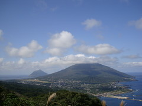
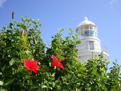

|
夜明け前に起きて星空と朝日を見た。短い旅ゆえに貪欲に楽しんでいる。
今日は予定通り自転車で島を一周した。その他寄り道も含めて 80km 程度だが、起伏が激しいためかなりハードだった。
今回は天気に恵まれ、八丈島の魅力を伝えるべく色々写真を撮った。
一周している間、どこを走っていても海が見える。
空気が澄んでいるためか空も本土の空と違うような。
| 高台から島が一望できる | こういう画は好き |
|  |
 |
峠から島の両端が見えて小さな島だと実感したが、自転車で回るには体力的にギリギリ。
右は南端の灯台。ハイビスカスと白い灯台がマッチしてどこまでも爽やか。
ヤシの木が並ぶ南国サイクリング。天気に恵まれないと厳しいが自転車好きの人には薦めたい。
観光シーズンでないためどこも人が少なかったが、島の人は気さくに話しかけてくれる人が多い。
右の写真の人は、はぐれヤギの子供を看病してそのまま飼っているそうだ。
葉をむしゃむしゃ食べていて面白かったが、家の障子なども食べてしまうそうだ。
都が離島を大事にしてくれているから道路がこんなに整備されているんだ、と教えてくれた人もいた。
日没後、この島で有名な光るキノコを見に行った。場所は昼間に下見しておいたが、それでも真っ暗で誰もいない小道は怖かった。
シーズンギリギリなので見られるかどうか微妙だったが、
しばらく闇の中で目を凝らすと、やっと光が判別できる程度のキノコ群を発見した。
直径数ミリくらいだったが、もっと巨大のもあるのだろうか。
すぐそばに足が三桁くらいある生物がいたがそれは見なかったことにして、がんばってキノコ撮影。
|